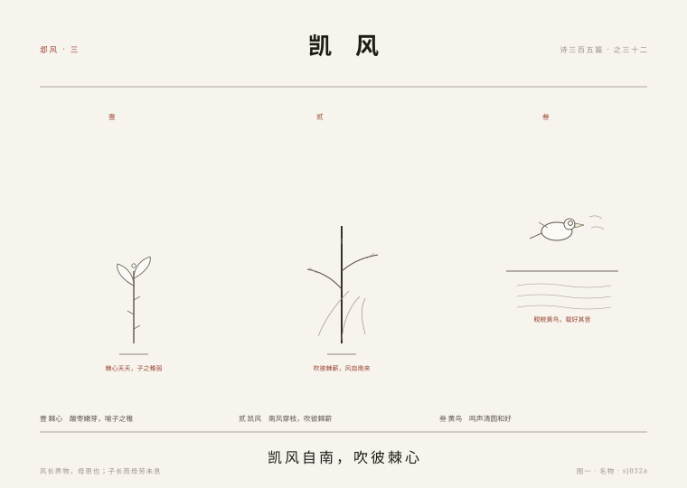
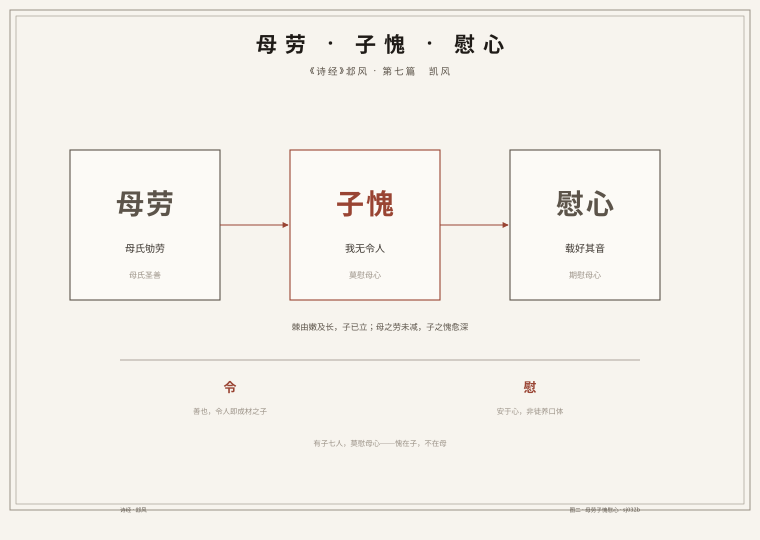

第三十二篇 凯风
邶风 · 之三 SJ032
朗读 · 普通话
依经文原文朗读，章次不读出；配古琴底乐，不改速、不加拖腔。全库同一音色（豆包 TTS），非播音员录制。
一 解题
诗三判：
- 谁在说：一个做儿子的（一说诸子中自责者）。全篇不说母亲不好，只说自己不成材，不能宽慰母亲。
- 说什么事：南风和暖，吹着酸枣嫩心；棘心夭夭长大，母亲却劬劳。母亲圣善，我却不是好人；寒泉在浚邑之下，有子七人，母亲依旧劳苦；黄鸟和鸣，有子七人，没人能安慰母亲的心。
- 为何编在此：前几篇写怨、写系、写别，此篇写愧。子于母，劬劳在母，惭愧在子；邶风之「变」中，此篇是向内自责的一支，与向外之怨相参。
《毛序》：「《凯风》，美孝子也。卫之淫风流行，虽有七子之母，犹不能安其室，故美七子能尽其孝道，以慰其母心而成其志尔。」——以为七子自责以安母。
朱子《诗集传》：「旧说：七子之母，不能安其室，故其母欲嫁，而七子作诗以自责，曰母氏圣善，而我无令人，盖婉其母之过。」——朱子存旧说，以为子自责以留母。
本库的看法：这首诗的骨在子自责不能慰母——「有子七人，莫慰母心」。
全篇最苦的话不是母亲劳苦，是儿子自己说「我无令人」「莫慰母心」。凯风本是和风，棘心本是稚弱；以风之长养比母之恩，以棘之长成比子之立。子已长，母之劳未息，愧从此起。此与召南《采蘩》之敬事其亲不同：彼敬在事上，此愧在心上。
二 经文
第一章
凱風自南，吹彼棘心。棘心夭夭，母氏劬勞。
第二章
凱風自南，吹彼棘薪。母氏聖善，我無令人。
第三章
爰有寒泉？在浚之下。有子七人，母氏勞苦。
第四章
睍睆黃鳥，載好其音。有子七人，莫慰母心。
分章：毛传、朱子皆四章，章四句。一、二章以凯风起兴，棘心—棘薪，由嫩及长；三章寒泉，四章黄鸟。两章重「有子七人」，二章重「母氏」，章法回环。
三 韵读
| 一 |
南、心、勞 |
侵部 |
| 二 |
薪、人 |
真部 |
| 三 |
下、苦 |
魚部 |
| 四 |
音、心 |
侵部 |
一章侵部闭口温厚，像南风养物；二章真部收束，落到「人」字自责；三章魚部宽而叹苦；四章回到侵部，收在「母心」。全篇落脚声是「莫慰母心」——愧到心上。
四 字义与名物
- 凱風——南风，和风。凯，和乐。不是「凯旋之风」。
- 棘心——酸枣树的嫩心（初生之芽），喻子之稚弱。棘，酸枣。
- 夭夭——少好、稚嫩茂盛之貌。
- 母氏——母亲。
- 劬勞（qú）——劳苦。劬，劳。
- 棘薪——棘已长成，可作柴薪，喻子之长成。
- 聖善：明达而善良。
- 無令人——没有好人。令，善。令人，善人。
- 爰——于何，在哪里。
- 寒泉——清冷的泉水，可灌可饮。
- 浚（xùn）——卫邑名。
- 勞苦——劳累辛苦。
- 睍睆（xiàn
huǎn）——清和圆转之貌，形容黄鸟鸣声。
- 黃鳥——黄雀。
- 載——则、乃。不是「装载」。
- 好其音——使其音美好。
- 莫慰母心——没有人能安慰母亲的心。
五 今译
第一章
和暖的南风从南来，吹着那酸枣嫩心。嫩心娇娇嫩嫩，母亲却如此劳苦。
第二章
和暖的南风从南来，吹着那长成的棘薪。母亲明达善良，我们却不是好人。
第三章
哪里有寒泉？在浚邑的地下。有儿子七个，母亲还是劳苦。
第四章
黄鸟鸣声清圆，唱出美好的声音。有儿子七个，却没人能安慰母亲的心。
译注：「凯风」译「和暖的南风」；「棘心」译酸枣嫩心，喻子之稚，「棘薪」喻子之长；「令」译「善」，「无令人」即没有成材之子；「载」译「则、乃」；「睍睆」写鸣声清和圆转。
六 章旨
一章：母劳于子稚。棘心夭夭，母已劬劳。
二章：子愧不成材。母既圣善，我无令人。
三章：七子未分母劳。寒泉润泽，母氏劳苦如故。
四章：七子未慰母心。黄鸟有好音，人反不如鸟。
由棘心到棘薪，子已长大；由劬劳到劳苦、到莫慰，母之劳未减而子之愧愈深。三、四章两言「有子七人」，人多而无补于母——人多不是慰，能慰母心才是。
此篇写「劬劳之愧」，与召南「敬以奉事」不同基调：彼向外尽责，此向内自咎。
七 诗教
- 赋：以风、棘、泉、鸟起兴而即赋母子之情；兴中见赋，直陈自责。
- 观：可观一「孝」之真处。孝不在称母之美，在反求己身：我是否「令人」，是否能慰母心。
- 群：七子同母，是群；诗中自责者代表七子，向母亲这一「群」之长负责。
- 怨：无怨母、怨命，只责己。偶有不堪母劳之意，亦收在自咎，不及于外。
八 分寸与边界
- 不可把「凯风」解作「凯旋之风」。凯风是南风、和风，取其长养万物。
- 不可把「棘心」解作「荆棘之心」之类比喻心肠。棘心是酸枣初生嫩芽，喻子之稚弱。
- 不可把「令」解作「命令」。令，善；「令人」即善人、成材之人。
- 不可把「载」解作「装载」「载运」。载是则、乃，语助而有承接义。
- 不可把此篇读成母亲被冷落、儿子抱怨母亲。诗的方向是子责己，不是母责子；读反了，全篇情义皆失。
九 存疑
- 母氏是否欲嫁：毛序、朱子存「七子之母不能安其室」之说，诗中无明文；本库只取子慰母，不坐实改嫁事。
- 作者为谁：一说七子中一人作，一说众子合作。本库不坐实作者。
- 「寒泉」之义：一说泉在浚下，润泽一方，喻母恩；一说以泉之寒润对照母之劳苦。本库两存。
- 「睍睆」所状：一说状鸟鸣声清圆，一说状黄鸟毛色好看。本库从鸣声。
- 七人之数：「七」或为实数，或言其多。本库取子众而仍不足慰母。
十 跨典
- 《小雅·蓼莪》「哀哀父母，生我劬劳」——同叹母之劬劳；彼痛于亲之不待养，此愧于己之不能慰。「劬劳」一语两见，为孝子两大篇。
- 《论语·为政》「弟子入则孝，出则弟」「今之孝者，是谓能养」——孔子论孝，养之外尚有敬与慰；正可解此篇「莫慰母心」之愧。
- 《礼记·内则》母子奉养之节——此篇不言奉养之礼，只言心之未慰，礼在心中。
- 《邶风·燕燕》「仲氏任只……淑慎其身」——同卷人物之贤；彼送人而重其德，此对母而愧己之不肖。
- 《小雅·南陔》（笙诗）孝子养亲之意——古以燕乐养亲，此篇以和风、好音起兴，意境相通。
十一 双卡与图
双卡五对：
| 凯风（南风和风） |
凯旋之风（误训） |
| 棘心（酸枣嫩芽） |
荆棘之心（误训） |
| 令（善） |
命令（误训） |
| 载（则、乃） |
装载（误训） |
| 慰母心 |
无令人 |

图一 · 南风·棘心·寒泉黄鸟 名物图

图二 · 母劳—子愧—慰心 义理图
读图三处：
- 棘由嫩及长：名物图左格画棘心嫩芽（主干带刺、枝端两小叶），中格画长成之棘薪，南风风线穿枝而过；左右对照，即一章至二章之子长。
- 风与泉皆线描：南风用平行柔线，寒泉用地下水纹；木与水皆以线成，不用几何色块合成。
- 黄鸟取鸣声特写：四章「睍睆」写音不写形，图上黄鸟侧影带眼圈与三级飞羽，旁加声波两弧；不求全鸟写实。